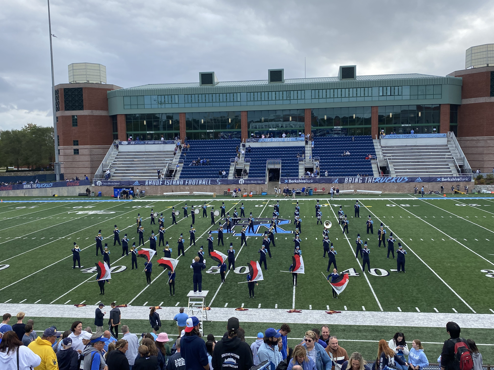
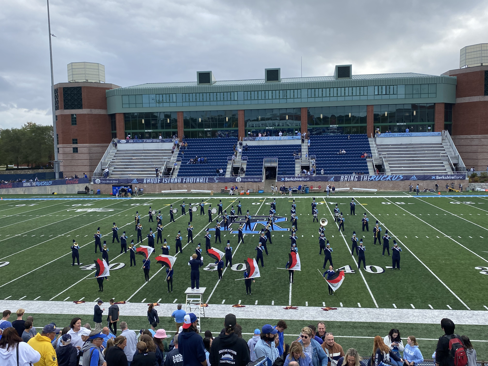
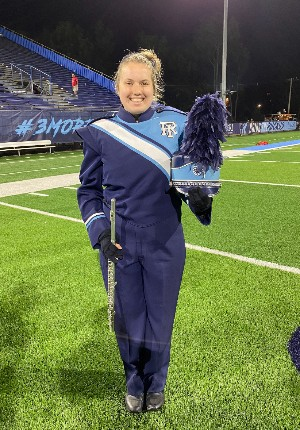

|
 |
 |
About Me
 

I am a senior Chemistry and Mathematics double major at URI. I am a member of several organizations on campus including The Puppy Raiser's Club, Alpha Chi Sigma (the professional chemistry fraternity), the marching band, and was a member of the dressage team.
The Puppy Raisers Club partners with Guiding Eyes for the Blind, a non-profit based out of New York. Several members raise dogs from the age of 10 weeks to 1.5 years old. I am a certified puppy sitter and volunteer to watch the dogs while their raisers have classes. Pictured in the left photo is Umberto one of the puppies this year, he is an 8 month old black lab.
